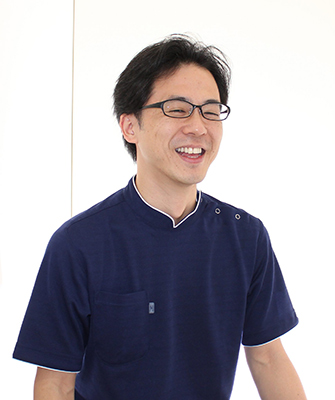

- ホーム
- ドクター紹介
「かすが歯科」のドクターをご紹介します
福岡県春日市の歯医者「かすが歯科」は、患者様とのコミュニケーションを何よりも大切にし、納得・安心の歯科医療をご提供します。どんな些細なことでも構いません。お口まわりのお悩みや気になることは、お気軽に当院までご相談ください。
こちらでは患者様により安心して受診していただけるよう、治療にあたる院長の略歴や所属団体、皆様へのご挨拶を記載しています。
ドクター紹介
かすが歯科院長 稲永龍一郎の略歴・所属団体と、皆様へのご挨拶です。
院長：稲永龍一郎
| 略歴 | 2001年3月 大阪大学歯学部 卒業 複数医療法人勤務を経て 2011年12月 「かすが歯科」開業 |
|---|---|
| 所属団体 | 機能矯正研究会 日本一般臨床医矯正研究会 保田矯正塾 |
ご挨拶

「あなたのお悩みは何ですか？」──私たち「かすが歯科」は、このような患者様へのヒアリングやコミュニケーションを何よりも大切にしています。当院のメンバーは医療従事者として安全な医院づくりだけでなく、患者様が安心して来院いただける信頼関係構築にも努めます。
従来の“歯科医療の常識”や“最先端の歯科技術”があっても、必ずしもそれが患者様に合うとは限りません。「患者様が今悩まれていること」に真摯に向き合い、「本当に必要な歯科医療」をご提供するため、お口まわりだけでなく全身の健康を考えたサポートを行います。どんな些細なことでも、お気軽に当院までご相談ください。